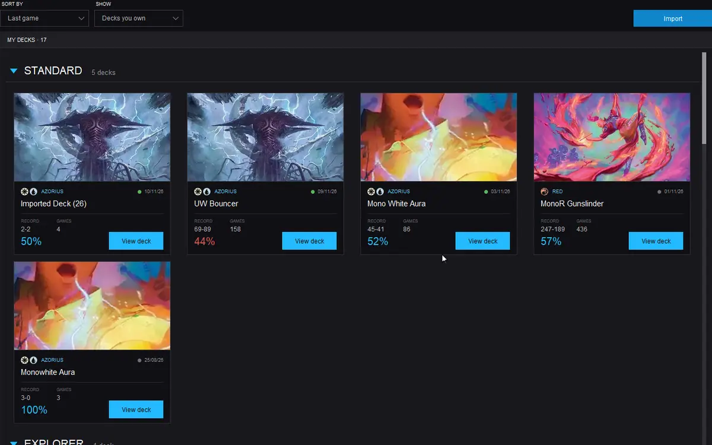

Step 1 · Your decks
Start from a deck
Your Arena decks are already there, as cards with their real record. A list from Arena, MTGO or any site comes in with Import. The meta built from the games players share is coming.
Read the guide: Your decks →